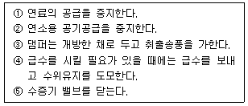
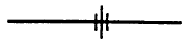
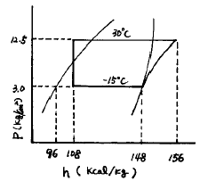

공조냉동기계기능사 (2001-10-14 기출문제)
1과목: 공조냉동안전관리
1. 추락이나 붕괴에 의한 재해방지를 위해 착용해야 할 보호구와 가장 거리가 먼 것은?
- 안전대
- 보안경
- 안전모
- 안전화
(정답률: 76%)

2. 산소병 운반 취급상 가장 위험한 것은?
- 기름 묻은 손으로 운반한다.
- 산소병을 뉘어서 운반한다.
- 캡을 씌어서 운반한다.
- 손의 보호를 위해 장갑을 낀다.
(정답률: 85%)
3. 가연성 가스의 화재, 폭발을 방지하기 위한 대책으로 틀린 것은?
- 가연성 가스를 사용하는 장치를 청소하고자 할 때는 가연성 가스로 한다.
- 가스가 발생하거나 누출될 우려가 있는 실내에서는 환기를 충분히 시킨다.
- 가연성 가스가 존재할 우려가 있는 장소에서는 화기를 엄금한다.
- 가스를 연료로 하는 연소설비에서는 점화하기전에 누출유무를 반드시 확인한다.
(정답률: 83%)
4. 방폭성능을 가진 전기기기의 구조 분류에 해당되지 않는 것은?
- 내압방폭구조
- 유입방폭구조
- 압력방폭구조
- 자체방폭구조
(정답률: 63%)
5. 보일러 사용중에 돌연히 비상사태가 발생해서 긴급하게 운전정지를 하지 않으면 안된다고 판단했을 때의 순서로 맞는 것은?

- ① - ② - ③ - ④ - ⑤
- ① - ② - ④ - ③ - ⑤
- ① - ② - ⑤ - ④ - ③
- ① - ② - ⑤ - ③ – ④
(정답률: 40%)
6. 다음 안전모의 취급안전관리 사항 중 적합하지 않는 것은?
- 화기를 취급하는 곳에서 모자의 몸체와 차양이 셀룰로이드로 된 것을 사용해야 한다.
- 산이나 알칼리를 취급하는 곳에서는 파이버모자를 사용한다.
- 안전모는 각 개인별 하나씩 사용한다.
- 모자와 머리 끝부분과의 간격은 25mm 이상 되도록 헤모크를 조정한다.
(정답률: 30%)
7. 암모니아 냉매를 취급하던 중 부주의로 인해 피부에 접촉하게 되었다. 올바른 조치방법은?
- 화상 염려가 있으므로 연고를 바른다.
- 물로 세척한다.
- 붕대로 감는다.
- 유동 파라핀을 바른다.
(정답률: 72%)
8. 줄작업시 설명으로 적당하지 않는 것은?
- 새줄인 경우에는 연질의 재료부터 작업을 한다.
- 줄을 밀 때 안전을 위하여 상체를 고정시키고 손목과 팔을 이용한다.
- 줄눈에 쇳밥이 박히는 것을 방지하기 위해 분필을 사용한다.
- 왼손을 줄끝에 대고 줄의 균형을 유지한다.
(정답률: 50%)
9. 가스 용접 작업에서 일어나는 재해가 아닌 것은?
- 화재
- 전격
- 폭발
- 중독
(정답률: 82%)
10. 냉동장치를 능률적으로 운전하기 위한 대책이 아닌 것은?
- 이상고압이 되지 않도록 주의한다.
- 냉매부족이 없도록 한다.
- 습압축이 되도록 한다.
- 각부의 가스 누설이 없도록 유의한다.
(정답률: 69%)
11. 공구 사용시 물적 안전대책이 아닌 것은?
- 공구상자의 준비
- 공구의 정비
- 작업자의 피로경감
- 작업장의 정비
(정답률: 82%)
12. 보일러의 부분 중 저온 부식에 의해 손상되기 쉬운 곳은?
- 과열기
- 재열기
- 수관
- 연도
(정답률: 31%)
13. 프레온 냉매가 누설되어 사고가 발생되었을 때의 응급조치 요령이 바르지 않은 것은?
- 프레온이 눈에 들어갔을 경우 응급조치로 묽은 붕산용액으로 눈을 씻어준다.
- 프레온은 공기보다 가벼우므로 머리를 아래로 한다.
- 프레온이 피부에 닿으면 동상의 위험이 있으므로 물로 씻고, 피크르산 용액을 얇게 뿌린다.
- 프레온이 불꽃에 닿으면 유독한 포스겐가스가 발생하여 더 큰 피해가 발생하므로 주의한다.
(정답률: 56%)
14. 보일러 연소장치에서의 역화 원인이 아닌 것은?
- 점화 시 착화가 늦어진 경우
- 압입통풍이 지나치게 큰 경우
- 장치 내에 미 연소가스가 체류할 경우
- 연료보다 공기를 먼저 공급한 경우
(정답률: 37%)
15. 다음 중 안전사항에 위배되는 것은?
- 가스용기는 전기가 잘 통하는 근처에 놓지 않는다.
- 가스용기 운반시에는 전자석을 이용한다.
- 가스용기는 캡을 씌워서 운반한다.
- 가스용기는 전도 및 충격을 방지한다.
(정답률: 84%)
2과목: 냉동기계
16. 다음 설명 중 옳은 것은?
- 고체에서 기체가 될 때에 필요한 열을 증발열이라 한다.
- 온도의 변화를 일으켜 온도계에 나타나는 열을 잠열이라 한다.
- 기체에서 액체로 될 때 제거해야 하는 열은 응축열 또는 감열이라 한다.
- 기체에서 액체로 될 때 필요한 열은 응축열이며, 이를 잠열이라 한다.
(정답률: 62%)
17. 어떤 냉동기를 사용하여 25℃ 의 순수한 물 100ℓ를 -10℃의 얼음으로 하는데 10분이 걸렸다고 한다면, 이 냉동기는 약 몇 냉동톤이겠는가? (단, 냉동기의 모든 효율은 100% 이다.)
- 3 냉동톤
- 16 냉동톤
- 20 냉동톤
- 25 냉동톤
(정답률: 46%)
18. 다음 중 냉매와 화학 분자식이 옳게 짝지어진 것은?
- R113 → CCl3F3
- R114 → CCl2F4
- R500 → CCl2F2+CH2CHF2
- R502 → CHClF2+C2ClF5
(정답률: 45%)
19. 암모니아 누출 검지법으로 틀린 것은?
- 자극성 있는 냄새가 난다.
- 페놀프탈레인지를 붉은색으로 변화 시킨다.
- 황산지를 태우면 흰 연기가 발생한다.
- 헬라이드 토치를 접근시키면 불꽃 색깔이 변한다.
(정답률: 69%)
20. 프레온 냉동장치에 대해 다음 설명 중 옳은 것은?
- 냉매가 누설하는 부위에 헬라이드등을 가깝게 대면 불꽃은 흑색으로 변한다.
- -50℃ ∼ -70℃의 저온용 배관재료로서 이음매 없는 동관을 사용한다.
- 브라인 중에 냉매가 누설하였을 경우의 시험 약품으로서 네슬러시약 용액을 사용한다.
- 포밍을 방지하기 위해 압축기에 오일 필터를 사용한다.
(정답률: 58%)
21. 건조포화증기를 압축기에서 압축시킬 경우 토출되는 증기의 양상은 어떻게 되는가?
- 과열증기
- 과열포화증기
- 포화액
- 습증기
(정답률: 55%)
22. 기준 냉동 사이클의 온도조건과 관계 없는 것은?
- 증발온도 : -15℃
- 응축온도 : 30℃
- 팽창변 직전의 냉매 액의 온도 : 25℃
- 압축기 흡입가스 온도 : 0℃
(정답률: 64%)
23. 회전식 압축기의 특징에 해당되지 않는 것은?
- 조립이나 조정에 있어서 고도의 정밀도가 요구된다.
- 체적 효율에 미치는 압축비가 왕복동보다 크다.
- 왕복동보다 마모에 의한 능력저하가 현저하다.
- 제작상 어려운 점이 많고 진공펌프로 많이 사용된다.
(정답률: 20%)
24. 팽창밸브에 관한 설명 중 틀린 것은?
- 팽창밸브의 조절이 양호하면 증발기를 나올 때 가스상태를 건조포화 증기로 할 수 있다.
- 팽창밸브에 될 수 있는 대로 낮은 온도의 냉매액을 보내도록 하면 냉동능력이 증대한다.
- 팽창밸브를 과도하게 조이면 증발기 내부가 저압, 저온이 되어 증발기 출구의 가스가 과열 되므로 압축기는 과열압축이 된다.
- 팽창밸브를 조절할 때는 서서히 개폐하는 것보다 급히 개폐하는 것이 빨리 안정된 운전 상태로 들어갈 수 있으므로 좋다.
(정답률: 75%)
25. 다음 중 암모니아 불응축 가스 분리기의 작용에 대한 설명에서 맞다고 생각되는 것은?
- 분리되어진 공기는 장치 밖으로 방출된다.
- 암모니아 가스는 냉각되어 응축액으로 되어 유분리기로 되돌아간다.
- 분리기내에서 분리되어진 공기는 온도가 상승한다.
- 분리된 NH3 가스는 압축기로 흡입 되어진다.
(정답률: 29%)
26. 다음 응축기에 대한 설명 중 옳은 것은?
- 수냉식 응축기에서는 냉각수의 흐르는 속도가 클수록 열통과율이 크지만 부식할 염려가 있다.
- 냉각관내에 물때가 많이 끼어도 냉각 수량은 변하지 않는다.
- 응축기의 안전 밸브의 최소구경은 응축기의 동경(胴經)에 의해서 산출된다.
- 해수를 냉각수로 사용하는 응축기에서는 동합금이 부식을 일으키기 때문에 일반적으로 스테인레스 강관을 사용한다.
(정답률: 32%)
27. 냉동장치에서 전자변을 사용하는데 그 사용목적 중 가장 거리가 먼 것은?
- 리키드 백(Liquid back)방지
- 냉매, 브라인의 흐름제어
- 습도 제어
- 온도 제어
(정답률: 46%)
28. 압축기 용량제어 방법의 채택 목적이 아닌 것은?
- 냉동능력의 증대
- 경제적인 운전실현
- 경부하 기동 및 운전
- 압축기 보호
(정답률: 29%)
29. 압축기에서 냉매를 압축하는 궁극적인 목적은 무엇인가?
- 저압으로 하기 위하여
- 액화하기 위하여
- 저열원으로 하기 위하여
- 팽창하기 위하여
(정답률: 56%)
30. 냉동능력이 5냉동톤이며 그 압축기의 소요동력이 5마력(PS)일 때 응축기에서 제거하여야 할 열량은 몇 ㎉/h인가?
- 18790 ㎉/h
- 21100 ㎉/h
- 19760 ㎉/h
- 20900 ㎉/h
(정답률: 52%)
31. 다음 중 냉동장치에 관한 설명이 옳지 않은 것은?
- 안전밸브가 작동하기전에 고압차단스위치가 작동하도록 조정한다.
- 온도식 자동 팽창변의 감온통은 증발기의 입구측에 붙인다.
- 가용전은 응축기의 보호를 위하여 사용한다.
- 파열판은 주로 터어보 냉동기의 저압측에 사용한다.
(정답률: 41%)
32. 암모니아 냉동기의 압축기에 공냉식을 채택하지 않는 이유는?
- 토출가스의 온도가 높기 때문에
- 압축비가 작기 때문에
- 냉동능력이 크기 때문에
- 독성가스이기 때문에
(정답률: 57%)
33. 액펌프 냉각 방식의 이점으로 옳은 것은?
- 리퀴드 백(liquid back)을 방지할 수 있다.
- 자동제상이 용이하지 않다.
- 증발기의 열통과율은 타증발기보다 양호하지 못하다.
- 펌프의 캐비테이션 현상 방지를 위해 낙차를 크게하고 있다.
(정답률: 69%)
34. 만액식과 건식 증발기를 비교할 때 건식 증발기의 장점이 아닌 것은?
- 윤활유가 증발기 내에 괼 우려가 적다.
- 소요 냉매량이 적다.
- 전열 효과가 크다.
- 설치가 용이하고 비용이 적다.
(정답률: 33%)
35. 가스켓의 재료가 갖추어야 할 조건이 아닌 것은?
- 유체에 의해 변질되지 않을 것
- 열변형이 용이할 것
- 충분한 강도를 가질 것
- 유연성을 유지할 수 있을 것
(정답률: 52%)
36. 다음중 무기질 보온 재료가 아닌 것은?
- 석면
- 콜크
- 규조토
- 암면
(정답률: 42%)
37. 동관의 납땜 이음시 이음쇠와 동관의 틈새는 몇 mm 정도가 적당한가?
- 0.1mm
- 1.0mm
- 2.0mm
- 3.5mm
(정답률: 47%)
38. 용접 강관을 벤딩할 때 구부리고자 하는 관을 바이스에 어떻게 물려야 되나?
- 용접선을 안쪽으로 향하게 한다.
- 용접선을 바깥쪽으로 향하게 한다.
- 용접선을 중간에 놓는다.
- 용접선은 방향에 관계없이 물린다.
(정답률: 45%)
39. 다음 그림 기호는 관의 어떤 결합방식을 표시하는가?

- 용접식
- 플랜지식
- 유니언식
- 턱걸이식
(정답률: 69%)
40. 전동기의 회전방향과 관계있는 법칙은?
- 렌쯔의 법칙
- 패러데이의 법칙
- 플레밍의 왼손법칙
- 키르히호프의 법칙
(정답률: 32%)
41. 주어진 입력신호가 동시에 가해질 때만 출력이 나오는 회로를 무슨 회로라 하는가?
- AND
- OR
- NOT
- NAND
(정답률: 66%)
42. 1HP 은 몇 W 인가?
- 535
- 620
- 710
- 746
(정답률: 40%)
43. 다음 설명 중 내용이 맞는 것은?
- 1[BTU]는 물 1[lb]를 1[℃]높이는데 필요한 열량이다.
- 절대압력은 대기압의 상태를 0으로 기준하여 측정한 압력이다.
- 이상기체를 단열팽창 시켰을 때 온도는 내려간다.
- 보일-샤를의 법칙이란 기체의부피는 압력에 반비례하고 절대온도에 반비례한다.
(정답률: 37%)
44. 간접냉매인 브라인의 구비조건 중 맞는 것은?
- 비열이 작을 것
- 열전도율이 클 것
- 응고점이 높을 것
- 점도가 클 것
(정답률: 19%)
45. 다음은 R-22 표준냉동사이클의 P-h선도이다. 압축일량은?

- 8㎉/㎏
- 48㎉/㎏
- 52㎉/㎏
- 60㎉/㎏
(정답률: 27%)
3과목: 공기조화
46. 우리나라 사람의 체감으로 약간 덥다고 느끼는 불쾌지수는?
- 65 이상
- 75 이상
- 80 이상
- 85 이상
(정답률: 61%)
47. 틈새바람에 의한 열손실을 방지하기 위한 방법으로 틀린 것은?
- 회전문을 설치한다.
- 2중 문을 설치한다.
- 2중 문의 중간에 강제 대류 컨벡터를 설치한다.
- 환기장치를 설치한다.
(정답률: 40%)
48. 다음의 공기조화 방식 중에서 개별방식이 아닌 것은?
- 룸 쿨러
- 멀티 유닛형 룸 쿨러
- 패키지 방식
- 팬 코일 유닛방식
(정답률: 65%)
49. 공기 조화기의 냉각코일 용량을 구할 경우 필요한 값과 거리가 먼 것은?
- 송풍량(m3/min)
- 혼합점 온도, 습도
- 실내 현열비
- 절대습도
(정답률: 47%)
50. 일명 패널(panel)난방이라고 하는 난방 방식은?
- 진공 환수식 난방법
- 강제 순환식 난방법
- 방사 난방법
- 온수 난방법
(정답률: 18%)
51. 겨울 난방에 적당한 건구온도는 몇 ℃ 인가? (단, 재실자가 보통 옷차림 상태에서 가벼운 작업을 할 경우 이다.)
- 7 – 10
- 12 - 15
- 20 – 22
- 27 - 30
(정답률: 69%)
52. 다음 공조방식 중 개별식에 해당되는 것은?
- 덕트 병용 패키지 방식
- 유인 유니트 방식
- 단일 덕트 방식
- 패키지 방식
(정답률: 60%)
53. 다음 중 습공기 선도의 종류에 속하지 않는 것은? (단, i는 엔탈피, x는 절대습도, t는 건구온도, P는 압력을 각각 나타낸다.)
- i – x선도
- t - x선도
- t – I선도
- P - i선도
(정답률: 35%)
54. 틈새 바람량을 줄이기 위한 방안으로 가장 우선적으로 고려되어야 할 사항은?
- 외부 풍향을 고려하여 건물의 방향을 조정한다.
- 개구부의 기밀성을 증가시킨다.
- 중성대의 위치를 조정한다.
- 건물의 높이를 낮게 조정한다.
(정답률: 36%)
55. 인체에 소비되는 열량이 많아져서 추위를 느끼게 되는 현상을 콜드 드래프트라 한다. 다음 중 콜드 드래프트 원인이라 볼 수 없는 것은?
- 인체 주위의 공기온도가 너무 낮을 때
- 기류속도가 작고 습도가 높을 때
- 주위 벽면의 온도가 낮을 때
- 겨울에 창문의 극간풍이 많을 때
(정답률: 73%)
56. 공기조화용 덕트 부속기기 덕트내의 풍속 (풍량) 온도, 압력, 먼지 등을 측정하기 위하여 측정구를 설치한다. 이와 같은 측정구는 엘보와 같은 곡관부에서 덕트폭의 몇 배이상 떨어진 장소에서 실시하는가?
- 7.5배 이상
- 8.5배 이상
- 9.5배 이상
- 6.5배 이상
(정답률: 24%)
57. 공기에서 수분을 제거하여 습도를 조정하기 위해서는 어떻게 해야하는가?
- 공기의 유로 중에 가열코일을 설치한다.
- 공기의 유로중에 공기의 노점온도보다 높은 온도의 코일을 설치한다.
- 공기의 유로중에 공기의 노점온도와 같은 온도의 코일을 설치한다.
- 공기의 유로중에 공기의 노점온도보다 낮은 온도의 코일을 설치한다.
(정답률: 50%)
58. 원심 송풍기의 번호가 NO 2일 때 깃의 지름은 얼마인가? (단, 단위는 mm)
- 150
- 200
- 250
- 300
(정답률: 50%)
59. 온수 베이스 보드난방에서 가열면의 공기유동을 조절하기 위한 장치는?
- 라지에터
- 드레인밸브
- 댐퍼
- 서모스탯
(정답률: 52%)
60. 온수난방의 단점이 아닌 것은?
- 장치의 열용량이 크므로 예열에 장시간이 필요하다.
- 연료의 소비량이 많다.
- 온수용 주철 보일러는 수두 제한 때문에 고층에서는 사용할 수 없다.
- 증기 환기의 냉각으로 열손실이 많다.
(정답률: 38%)